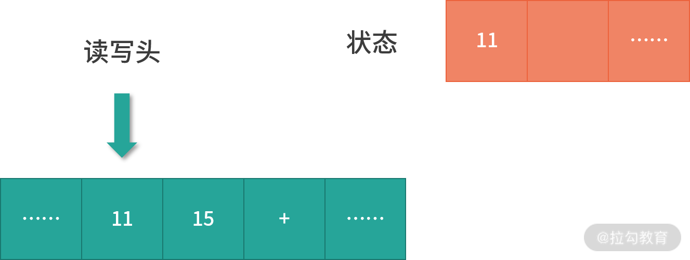
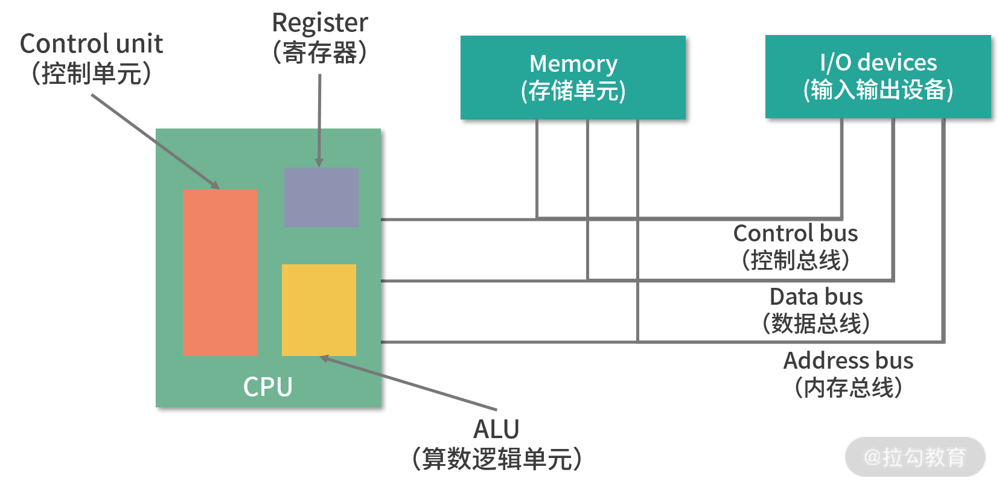
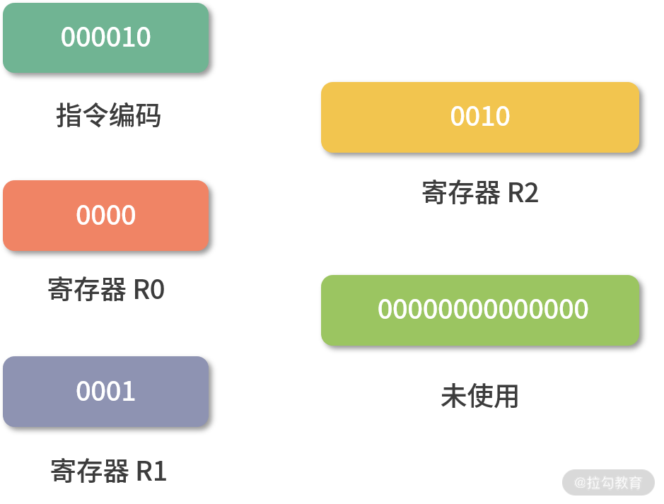

前置知识：程序是如何执行的？
我们先来看一道常规的面试题：相比 32 位，64 位的优势是什么？
面试官考察这种类型的问题，主要是想看求职者是否有扎实的计算机基础，同时想知道求职者在工作中是否充满好奇，会主动学习、寻根问底，毕竟 32、64 位是经常出现在程序员视野的词汇，常见的东西都弄明白了，那说明这个人学习能力强。
其实 ，面试官在这里给你挖了一个陷阱，因为他没有说清楚 32、64 位指的是操作系统、是软件、还是 CPU？
- 如果是软件，那么我们的数据库有 32 位和 64 位版本；
- 如果是操作系统，那么在阿里云上选择 Centos 和 Debian 版本的时候，也会有 32/64 版本；
- 如果是 CPU，那么有 32 位 CPU，也有 64 位 CPU。
接下来请你带着问题开始今天的课程学习，本课时的重点是带你学懂程序执行的原理。
一、图灵机的构造
想要学懂程序执行的原理，就要从图灵机说起了。它在计算机科学方面有两个巨大的贡献：
第一，它清楚地定义了计算机能力的边界，也就是可计算理论；
第二，它定义了计算机由哪些部分组成，程序又是如何执行的。

我们先来看一看图灵机的内部构造：
- 图灵机拥有一条无限长的纸带，纸带上是一个格子挨着一个格子，格子中可以写字符，你可以把纸带看作内存，而这些字符可以看作是内存中的数据或者程序。
- 图灵机有一个读写头，读写头可以读取任意格子上的字符，也可以改写任意格子的字符。
- 读写头上面的盒子里是一些精密的零件，包括图灵机的存储、控制单元和运算单元。
二、图灵机如何执行程序
下面我们来举一个例子，让大家弄清楚图灵机是如何工作的，比如我们要计算 11 + 15 的值，具体的运算步骤如下：
- 首先，我们将“11、15、+” 分别写入纸带上的 3 个格子（现在纸带上的字符串是11、15、 +)，然后将读写头先停在 11 对应的格子上。
- 接下来，图灵机通过读写头读入 11 到它的存储设备中（这个存储设备也叫作图灵机的状态）。图灵机没有说读写头为什么可以识别纸带上的字符，而是假定读写头可以做到这点。

- 然后读写头向右移动一个格，用同样的方法将 15 读入图灵机的状态中。现在图灵机的状态中有两个连续的数字，11 和 15。

- 接下来重复上面的过程，会读到一个+号。下面我详细说一下这个运算流程：
- 读写头读到一个 + 号 ；
- 然后将 + 号传输给控制单元 ；
- 控制单元发现是一个 + 号，所以没有存入状态中。因为 + 号是一个我们预设的控制符（指令），它的作用是加和目前状态。因此，控制单元识别出是控制符，并通知运算单元工作；
- 运算单元从状态中读入 11、15 并进行计算，将结果 26 存储到状态；
- 运算单元将结果回传给控制单元；
- 控制单元将结果传输给读写头。
- 读写头向右移动，将结果 26 写入纸带。

这样，我们就通过图灵机计算出了 11+15 的值。不知道你有没有发现，图灵机构造的这一台机器，主要功能就是读写纸带然后计算；纸带中有数据、也有控制字符（也就是指令），这个设计和我们今天的计算机是一样的。
图灵通过数学证明了，一个问题如果可以拆解成图灵机的可执行步骤，那问题就是可计算的。另一方面，图灵机定义了计算机的组成以及工作原理，但是没有给出具体的实现。
三、冯诺依曼模型

具体的实现是 1945 年冯诺依曼和其他几位科学家在著名的 101 页报告中提出的。报告遵循了图灵机的设计，并提出用电子元件构造计算机，约定了用二进制进行计算和存储，并且将计算机结构分成以下 5 个部分：
- 输入设备；
- 输出设备；
- 内存；
- 中央处理器；
- 总线。
这个模型也被称为冯诺依曼模型，下面我们具体来看看这 5 部分的作用。
内存
在冯诺依曼模型中，程序和数据被存储在一个被称作内存的线性排列存储区域。存储的数据单位是一个二进制位，英文是 bit。最小的存储单位叫作字节，也就是 8 位，英文是 byte，每一个字节都对应一个内存地址。内存地址由 0 开始编号，比如第 1 个地址是 0，第 2 个地址是 1， 然后自增排列，最后一个地址是内存中的字节数减 1。
我们通常说的内存都是随机存取器，也就是读取任何一个地址数据的速度是一样的，写入任何一个地址数据的速度也是一样的。
CPU
冯诺依曼模型中 CPU 负责控制和计算。为了方便计算较大的数值，CPU 每次可以计算多个字节的数据。
- 如果 CPU 每次可以计算 4 个 byte，那么我们称作 32 位 CPU；
- 如果 CPU 每次可以计算 8 个 byte，那么我们称作 64 位 CPU。
这里的 32 和 64，称作 CPU 的位宽。
为什么 CPU 要这样设计呢？ 因为一个 byte 最大的表示范围就是 0~255。比如要计算 20000*50，就超出了byte 最大的表示范围了。因此，CPU 需要支持多个 byte 一起计算。当然，CPU 位数越大，可以计算的数值就越大。但是在现实生活中不一定需要计算这么大的数值。比如说 32 位 CPU 能计算的最大整数是 4294967295，这已经非常大了。
控制单元和逻辑运算单元
CPU 中有一个控制单元专门负责控制 CPU 工作；还有逻辑运算单元专门负责计算。具体的工作原理我们在指令部分给大家分析。
寄存器
CPU 要进行计算，比如最简单的加和两个数字时，因为 CPU 离内存太远，所以需要一种离自己近的存储来存储将要被计算的数字。这种存储就是寄存器。寄存器就在 CPU 里，控制单元和逻辑运算单元非常近，因此速度很快。
- 寄存器中有一部分是可供用户编程用的，比如用来存加和指令的两个参数，是通用寄存器。
- 还有一部分寄存器有特殊的用途，叫作特殊寄存器。比如程序指针，就是一个特殊寄存器。它存储了 CPU 要执行的下一条指令所在的内存地址。注意，程序指针不是存储了下一条要执行的指令，此时指令还在内存中，程序指针只是存储了下一条指令的地址。
- 下一条要执行的指令，会从内存读入到另一个特殊的寄存器中，这个寄存器叫作指令寄存器。指令被执行完成之前，指令都存储在这里。
总线
CPU 和内存以及其他设备之间，也需要通信，因此我们用一种特殊的设备进行控制，就是总线。总线分成 3 种：
- 一种是地址总线，专门用来指定 CPU 将要操作的内存地址。
- 还有一种是数据总线，用来读写内存中的数据。
当 CPU 需要读写内存的时候，先要通过地址总线来指定内存地址，再通过数据总线来传输数据。
- 最后一种总线叫作控制总线，用来发送和接收关键信号，比如后面我们会学到的中断信号，还有设备复位、就绪等信号，都是通过控制总线传输。同样的，CPU 需要对这些信号进行响应，这也需要控制总线。
输入、输出设备
输入设备向计算机输入数据，计算机经过计算，将结果通过输出设备向外界传达。如果输入设备、输出设备想要和 CPU 进行交互，比如说用户按键需要 CPU 响应，这时候就需要用到控制总线。
到这里，相信你已经对冯诺依曼模型的构造有了一定的了解。这里我再强调几个问题：
1. 线路位宽问题
第一个问题是，你可能会好奇数据如何通过线路传递。其实是通过操作电压，低电压是 0，高电压是 1。
如果只有一条线路，每次只能传递 1 个信号，因为你必须在 0,1 中选一个。比如你构造高高低低这样的信号，其实就是 1100，相当于你传了一个数字 10 过去。大家注意，这种传递是相当慢的，因为你需要传递 4 次。
这种一个 bit 一个 bit 发送的方式，我们叫作串行。如果希望每次多传一些数据，就需要增加线路，也就是需要并行。
如果只有 1 条地址总线，那每次只能表示 0-1 两种情况，所以只能操作 2 个内存地址；如果有 10 条地址总线，一次就可以表示 210 种情况，也就是可以操作 1024 个内存地址；如果你希望操作 4G 的内存，那么就需要 32 条线，因为 232 是 4G。
到这里，你可能会问，那我串行发送行不行？当然也不是不行，只是速度会很慢，因为每多增加一条线路速度就会翻倍。
2. 64 位和 32 位的计算
第二个问题是，CPU 的位宽会对计算造成什么影响？
我们来看一个具体场景：要用 32 位宽的 CPU，加和两个 64 位的数字。
32 位宽的 CPU 控制 40 位宽的地址总线、数据总线工作会非常麻烦，需要双方制定协议。 因此通常 32 位宽 CPU 最多操作 32 位宽的地址总线和数据总线。
因此必须把两个 64 位数字拆成 2 个 32 位数字来计算，这样就需要一个算法，比如用像小时候做加法竖式一样，先加和两个低位的 32 位数字，算出进位，然后加和两个高位的 32 位数字，最后再加上进位。
而 64 位的 CPU 就可以一次读入 64 位的数字，同时 64 位的 CPU 内部的逻辑计算单元，也支持 64 位的数字进行计算。但是你千万不要仅仅因为位宽的区别，就认为 64 位 CPU 性能比 32 位高很多。
要知道大部分应用不需要计算超过 32 位的数字，比如你做一个电商网站，用户的金额通常是 10 万以下的，而 32 位有符号整数，最大可以到 20 亿。所以这样的计算在 32 位还是 64 位中没有什么区别。
还有一点要注意，32 位宽的 CPU 没办法控制超过 32 位的地址总线、数据总线工作。比如说你有一条 40 位的地址总线（其实就是 40 条线），32 位的 CPU 没有办法一次给 40 个信号，因为它最多只有 32 位的寄存器。因此 32 位宽的 CPU 最多操作 232 个内存地址，也就是 4G 内存地址。
四、程序的执行过程
当 CPU 执行程序的时候：
1.首先，CPU 读取 PC 指针指向的指令，将它导入指令寄存器。具体来说，完成读取指令这件事情有 3 个步骤：
步骤 1：CPU 的控制单元操作地址总线指定需要访问的内存地址（简单理解，就是把 PC 指针中的值拷贝到地址总线中）。
步骤 2：CPU 通知内存设备准备数据（内存设备准备好了，就通过数据总线将数据传送给 CPU）。
步骤 3：CPU 收到内存传来的数据后，将这个数据存入指令寄存器。
完成以上 3 步，CPU 成功读取了 PC 指针指向指令，存入了指令寄存器。
2.然后，CPU 分析指令寄存器中的指令，确定指令的类型和参数。
3.如果是计算类型的指令，那么就交给逻辑运算单元计算；如果是存储类型的指令，那么由控制单元执行。
4.PC 指针自增，并准备获取下一条指令。
比如在 32 位的机器上，指令是 32 位 4 个字节，需要 4 个内存地址存储，因此 PC 指针会自增 4。

了解了程序的执行过程后，我还有一些问题想和大家一起讨论：
- 内存虽然是一个随机存取器，但是我们通常不会把指令和数据存在一起，这是为了安全起见。具体的原因我会在模块四进程部分展开讲解，欢迎大家在本课时的留言区讨论起来，我会结合你们留言的内容做后续的课程设计。
- 程序指针也是一个寄存器，64 位的 CPU 会提供 64 位的寄存器，这样就可以使用更多内存地址。特别要说明的是，64 位的寄存器可以寻址的范围非常大，但是也会受到地址总线条数的限制。比如和 64 位 CPU 配套工作的地址总线只有 40 条，那么可以寻址的范围就只有 1T，也就是 240。
- 从 PC 指针读取指令、到执行、再到下一条指令，构成了一个循环，这个不断循环的过程叫作CPU 的指令周期，下面我们会详细讲解这个概念。
五、详解 a = 11 + 15 的执行过程
上面我们了解了基本的程序执行过程，接下来我们来看看如果用冯诺依曼模型执行a=11+15是一个怎样的过程。
我们再 Review 下这个问题：程序员写的程序a=11+15是字符串，CPU 不能执行字符串，只能执行指令。所以这里需要用到一种特殊的程序——编译器。编译器的核心能力是翻译，它把一种程序翻译成另一种程序语言。
这里，我们需要编译器将程序员写的程序翻译成 CPU 认识的指令（指令我们认为是一种低级语言，我们平时书写的是高级语言）。你可以先跟我完整地学完操作系统，再去深入了解编译原理的内容。
下面我们来详细阐述 a=11+15 的执行过程：
1.编译器通过分析，发现 11 和 15 是数据，因此编译好的程序启动时，会在内存中开辟出一个专门的区域存这样的常数，这个专门用来存储常数的区域，就是数据段，如下图所示：
- 11 被存储到了地址 0x100；
- 15 被存储到了地址 0x104；

2.编译器将a=11+15转换成了 4 条指令，程序启动后，这些指令被导入了一个专门用来存储指令的区域，也就是正文段。如上图所示，这 4 条指令被存储到了 0x200-0x20c 的区域中：
0x200 位置的 load 指令将地址 0x100 中的数据 11 导入寄存器 R0；
0x204 位置的 load 指令将地址 0x104 中的数据 15 导入寄存器 R1；
0x208 位置的 add 指令将寄存器 R0 和 R1 中的值相加，存入寄存器 R2；
0x20c 位置的 store 指令将寄存器 R2 中的值存回数据区域中的 0x1108 位置。
3.具体执行的时候，PC 指针先指向 0x200 位置，然后依次执行这 4 条指令。
这里还有几个问题要说明一下：
- 变量 a 实际上是内存中的一个地址，a 是给程序员的助记符。
- 为什么 0x200 中代表加载数据到寄存器的指令是 0x8c000100，我们会在下面详细讨论。
- 不知道细心的同学是否发现，在上面的例子中，我们每次操作 4 个地址，也就是 32 位，这是因为我们在用 32 位宽的 CPU 举例。在 32 位宽的 CPU 中，指令也是 32 位的。但是数据可以小于 32 位，比如可以加和两个 8 位的字节。
- 关于数据段和正文段的内容，会在模块四进程和线程部分继续讲解。
六、指令
接下来我会带你具体分析指令的执行过程。
在上面的例子中，load 指令将内存中的数据导入寄存器，我们写成了 16 进制：0x8c000100，拆分成二进制就是：
这里大家还是看下图，需要看一下才能明白。

- 最左边的 6 位，叫作操作码，英文是 OpCode，100011 代表 load 指令；
- 中间的 4 位 0000是寄存器的编号，这里代表寄存器 R0；
- 后面的 22 位代表要读取的地址，也就是 0x100。
所以我们是把操作码、寄存器的编号、要读取的地址合并到了一个 32 位的指令中。
我们再来看一条求加法运算的 add 指令，16 进制表示是 0x08048000，换算成二进制就是：

- 最左边的 6 位是指令编码，代表指令 add；
- 紧接着的 4 位 0000 代表寄存器 R0；
- 然后再接着的 4 位 0001 代表寄存器 R1；
- 再接着的 4 位 0010 代表寄存器 R2；
- 最后剩下的 14 位没有被使用。
构造指令的过程，叫作指令的编码，通常由编译器完成；解析指令的过程，叫作指令的解码，由 CPU 完成。由此可见 CPU 内部有一个循环：
- 首先 CPU 通过 PC 指针读取对应内存地址的指令，我们将这个步骤叫作 Fetch，就是获取的意思。
- CPU 对指令进行解码，我们将这个部分叫作 Decode。
- CPU 执行指令，我们将这个部分叫作 Execution。
- CPU 将结果存回寄存器或者将寄存器存入内存，我们将这个步骤叫作 Store。

上面 4 个步骤，我们叫作 CPU 的指令周期。CPU 的工作就是一个周期接着一个周期，周而复始。
指令的类型
通过上面的例子，你会发现不同类型（不同 OpCode）的指令、参数个数、每个参数的位宽，都不一样。而参数可以是以下这三种类型：
- 寄存器；
- 内存地址；
- 数值（一般是整数和浮点）。
当然，无论是寄存器、内存地址还是数值，它们都是数字。
指令从功能角度来划分，大概有以下 5 类：
- I/O 类型的指令，比如处理和内存间数据交换的指令 store/load 等；再比如将一个内存地址的数据转移到另一个内存地址的 mov 指令。
- 计算类型的指令，最多只能处理两个寄存器，比如加减乘除、位运算、比较大小等。
- 跳转类型的指令，用处就是修改 PC 指针。比如编程中大家经常会遇到需要条件判断+跳转的逻辑，比如 if-else，swtich-case、函数调用等。
- 信号类型的指令，比如发送中断的指令 trap。
- 闲置 CPU 的指令 nop，一般 CPU 都有这样一条指令，执行后 CPU 会空转一个周期。
指令还有一个分法，就是寻址模式，比如同样是求和指令，可能会有 2 个版本：
- 将两个寄存器的值相加的 add 指令。
- 将一个寄存器和一个整数相加的 addi 指令。
另外，同样是加载内存中的数据到寄存器的 load 指令也有不同的寻址模式：
- 比如直接加载一个内存地址中的数据到寄存器的指令
la，叫作直接寻址。 - 直接将一个数值导入寄存器的指令
li，叫作寄存器寻址。 - 将一个寄存器中的数值作为地址，然后再去加载这个地址中数据的指令
lw，叫作间接寻址。
因此寻址模式是从指令如何获取数据的角度，对指令的一种分类，目的是给编写指令的人更多选择。
了解了指令的类型后，我再强调几个细节问题：
- 关于寻址模式和所有的指令，只要你不是嵌入式开发人员，就不需要记忆，理解即可。
- 不同 CPU 的指令和寄存器名称都不一样，因此这些名称也不需要你记忆。
- 有几个寄存器在所有 CPU 里名字都一样，比如 PC 指针、指令寄存器等。
指令的执行速度
之前我们提到过 CPU 是用石英晶体产生的脉冲转化为时钟信号驱动的，每一次时钟信号高低电平的转换就是一个周期，我们称为时钟周期。CPU 的主频，说的就是时钟信号的频率。比如一个 1GHz 的 CPU，说的是时钟信号的频率是 1G。
到这里你可能会有疑问：是不是每个时钟周期都可以执行一条指令？其实，不是的，多数指令不能在一个时钟周期完成，通常需要 2 个、4 个、6 个时钟周期。
七、总结
接下来我们来做一个总结。这节课我们深入讨论了指令和指令的分类。接下来，我们来看一看在 02 课时中留下的问题：64 位和 32 位比较有哪些优势？
还是老规矩，请你先自己思考这个问题的答案，写在留言区，然后再来看我接下来的分析。
【解析】 其实，这个问题需要分类讨论。
- 如果说的是 64 位宽 CPU，那么有 2 个优势。
优势 1：64 位 CPU 可以执行更大数字的运算，这个优势在普通应用上不明显，但是对于数值计算较多的应用就非常明显。
优势 2：64 位 CPU 可以寻址更大的内存空间
- 如果 32 位/64 位说的是程序，那么说的是指令是 64 位还是 32 位的。32 位指令在 64 位机器上执行，困难不大，可以兼容。 如果是 64 位指令，在 32 位机器上执行就困难了。因为 32 位指令在 64 位机器执行的时候，需要的是一套兼容机制；但是 64 位指令在 32 位机器上执行，32 位的寄存器都存不下指令的参数。
- 操作系统也是一种程序，如果是 64 位操作系统，也就是操作系统中程序的指令都是 64 位指令，因此不能安装在 32 位机器上。
八、思考题
最后再给你出一道思考题：CPU 中有没有求对数的指令？如果没有那么程序如何去计算？
Tips: Please indicate the source and original author when reprinting or quoting this article.